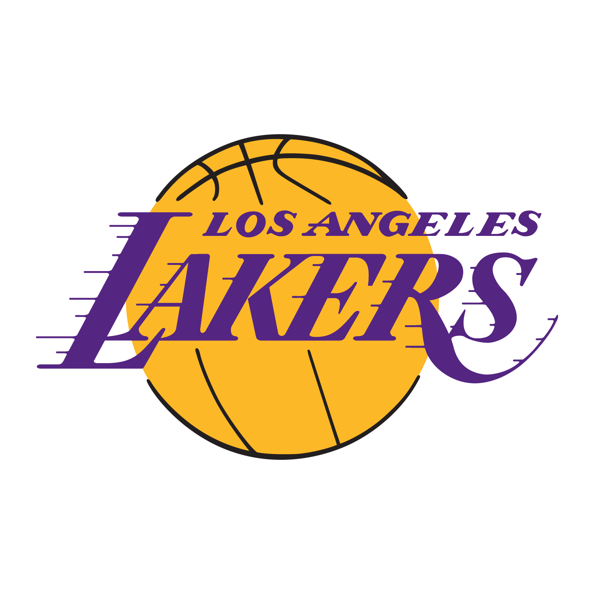

Los Angeles Lakers é um time de basquetebol da NBA (National Basketball Association) com sede em Los Angeles, Califórnia. A equipe foi fundada em 1947, em Minneapolis, onde recebeu seu nome em alusão ao fato do estado de Minnesota ser conhecido como "Terra dos Mil Lagos", e venceu cinco títulos da liga antes de uma queda de público presente levar a uma relocação para Los Angeles em 1960. No fim dos anos 1970 e no começo dos anos 1980, a popularidade do Lakers cresceu, tornando-se uma das franquias de maior sucesso, além de ser a com maior número de títulos, 17, empatado com o Boston Celtics. A equipe ainda conta com 56 aparições na pós-temporada, 33 títulos da Divisão do Pacífico e 32 títulos da Conferência Oeste.

Los Angeles Lakers
